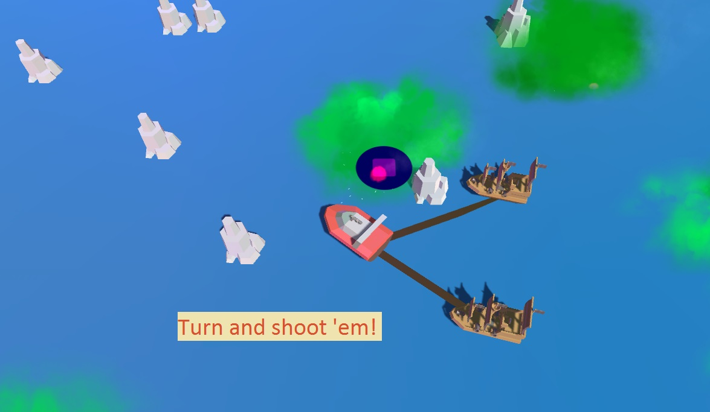
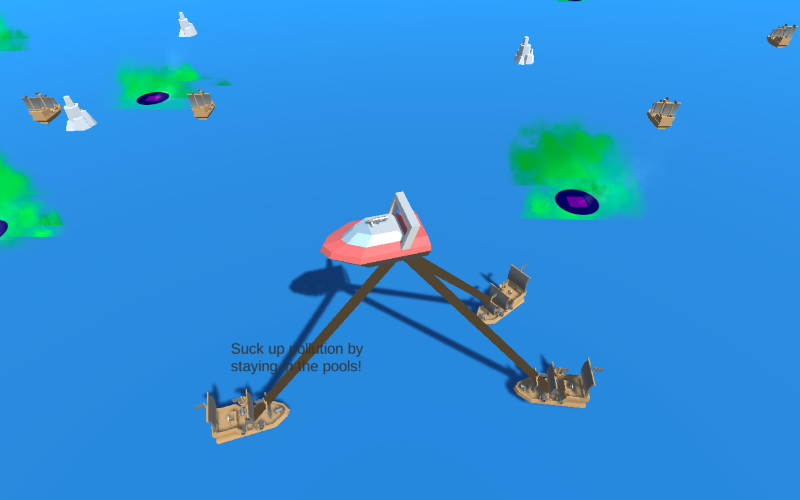

Menacing pirates have dumped their pollution, and see you as a threat... Here we see two ships trying to defeat your Eco-Boat, just before you turn to shoot them!
What could be better than trying to beat your friends score and earn bragging rights. How about beating hard mode over all your friends. Well this is my favourite part in the game jumping around as a flying boat! what could be better. you don't need anything else when you can spout wings and fly.


Collecting all the pollution of the world by fighting the pirate ships is what we are going to do and "Save The Day".